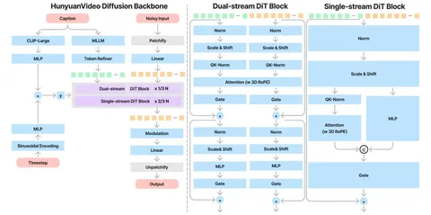
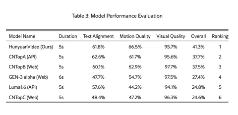

Сегодня разбираем статью от команды Tencent о HunyuanVideo — большой генеративной модели для видео. Работа во многом напоминает MovieGen, но есть некоторые важные отличия. А главное — веса модели выложены в открытый доступ, что редкость для видеомоделей.
Обучение начинается с картинок 256×256, потом разрешение повышают до 512×512. При этом 256×256 всё ещё поддерживается — чтобы не терять навык генерации на этом уровне. Сначала учат только на изображениях, потом добавляют видео.
Генерация стартует с нормального распределения, стандартного для диффузионок. Но вместо линейно-квадратичного расписания шагов из MovieGen, здесь применяется «сдвинутое» специальным образом расписание. Авторы говорят, что такой сдвиг даёт лучшее качество, чем квадратичное расписание, особенно при уменьшении количества шагов инференса.
Видео для обучения берут из датасета WebVid. Чтобы сбалансировать данные, авторы находят 10 000 центроид и сэмплируют из них так, чтобы равномерно распределить количество примеров между центроидами. Если в одну центроиду попадает слишком много данных, часть отбрасывают. Так датасет получается разнообразнее.
У модели несколько видов параллелизма: тензорный (делят слои и FF-блоки между GPU), контекстный (делят токены между процессами) и параллелизм по данным. Это помогает обрабатывать длинные последовательности, возникающие при генерации в высоком разрешении.
Также модель поддерживает CFG и guidance distillation — учитель и ученик, как обычно. Ученик учится повторять учителя по результатам генерации. Для переписывания промптов используют Hunyuan Large Language Model — особенно если исходный текст слишком технический.
Есть отдельная аудиомодель, которая по сгенерённому видео создаёт музыку. Она учится на спектрограммах и работает в духе AudioGen.
Ещё есть возможности персонализации: можно подать референс-картинку и получить видео. Модель справляется с аватарами, движущимися портретами и анимацией объектов.
Авторы собрали свой бенчмарк из 1533 промптов и сравнились с пятью сильными бейзлайнами. Публикуют не всё: выкладывают 600 промптов. Смотрят на соответствие тексту, движение, визуальное качество и общее впечатление. Их модель лидирует, но не с гигантским отрывом. Оценки FLOPs — без подробностей, так что сравнивать с другими моделями сложно.
Разбор подготовил
CV Time
